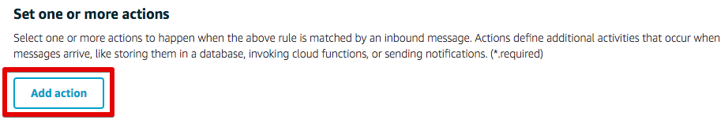
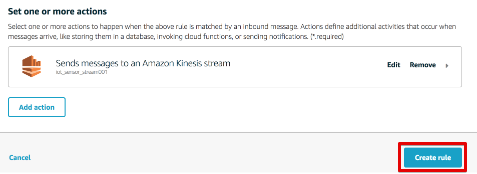
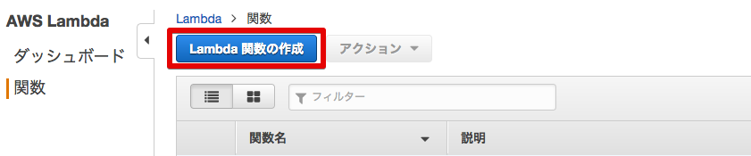

5. センサーデータの送信¶
Intel Edisonに接続された照度センサーのデータを外部サービスのKintoneへ送信します。 EdisonはAWS IoTのトピックにデータをパブリッシュし、AWS IoTでルールに基づきKinesisへデータを渡し、Lambdaへ送られ、Lambda関数が実行されます。

センサーデータは以下のJSONフォーマットとします。
{
"timestamp": "2015-10-24T14:16:37.305Z", ←ISO8601形式
"value": "300" ←アナログ値
}
5.1. Kinesisストリームの作成¶
サービス：Kinesisへ移動します。

[Streamに進む]を押して、Kinesis Stream設定画面へ移動します。
スクリーンショットの赤枠で囲んだ部分について、以下の項目を入力します。 任意の番号の部分は他のユーザと被らない数字を入力してください。
| 設定項目 | 値 |
|---|---|
| ストリーム名 | iot_sensor_stream<任意の番号> |
| シャード数 | 1 |

[ストリームの作成]をクリックします。
5.2. AWS IoT ルールの作成¶
メニューのRulesをクリックし[Create]をクリックします。

スクリーンショットの赤枠で囲んだ部分について、以下の項目を入力します。 任意の番号の部分は他のユーザと被らない数字を入力してください。
| 設定項目 | 値 |
|---|---|
| Name | SendtoKinesis<任意の番号> |
| SQL Version | 2016-03-23 |
| Description | 任意 |
| Attribute | topic(2) as deviceid,*(アスタリスク) |
| Topic Filter | edison/illuminance<任意の番号> |

[Add action]をクリックします。
Select an action画面で、”Select an action”から”Sends messages to an Amazon Kinesis stream”を選択し、[Configure action]をクリックします。


“Configure action”画面で、以下の値を入力します。
| 設定項目 | 値 |
|---|---|
| Stream name | awsiot-handson-table<任意の番号> |
| Partition key | timestamp() |
[Create a new role]をクリックし、AWS IoTからKinesisへトピックを送信するためのRoleを作成します。 別画面が出てきますので、ロール名として”AWSIoTHandsonKinesis”と入力し、再度[Create a new role]をクリックします。 これによって入力したロール名が選択できるようになるので、作成したロールを選択し、[Upate role]をクリックし、次に[Add action]をクリックします。
“Kinesis Action”が追加されたことを確認したら、[Create rule]をクリックします。
ルールが作成されたことを確認します。

5.3. Lambdaの設定¶
サービス：Lambdaに移動し、”Lambda関数の作成”をクリックします。
設計図の選択画面で、フィルターに”Kinesis”と入力し、”kinesis-process-record-python”をクリックします。

“トリガーの設定”画面で、以下の値を入力します。
| 設定項目 | 値 |
|---|---|
| Kinesis ストリーム | iot_sensor_stream<任意の番号> |
| 開始位置 | 水平トリム |

[次へ]をクリックします。
“関数の設定”画面で、名前 “kintone_function”と入力します。 コード エントリ タイプで”S3から...”を選択し、下記のURLを入力します。
https://s3-ap-northeast-1.amazonaws.com/aws-iot-handson-basic/kintone_1st.py
IAM role = lambdabasicexecution
5.4. プログラムの実行¶
照度センサーから照度データを取得し、AWS IoTのメッセージブローカーへ送信するためのプログラムを実行します。サンプルプログラム内のawsiot-handson-fundamentals配下のsensorに移動し、プログラムを実行します。
root@edison:~awsiot-handson-fundamentals/sensor# node main.js edison/illuminance<任意の番号>
Publish: {"timestamp":"2015-10-24T14:16:37.305Z","value":268}
Publish: {"timestamp":"2015-10-24T14:16:38.365Z","value":268}
Publish: {"timestamp":"2015-10-24T14:16:39.424Z","value":271}
Publish: {"timestamp":"2015-10-24T14:16:40.484Z","value":270}
Publish: {"timestamp":"2015-10-24T14:16:41.535Z","value":272}
AWS IoTのTestにて、”Subscription topic”に “edison/illuminance<任意の番号>” を入力すれば、トピックがPublishされていることが分かります。
5.5. センサーデータを確認する¶
このURLからKintoneのグラフを参照できます、
https://n58cb.cybozu.com/k/24/report?report=5113210
| 項目 | 値 |
|---|---|
| ユーザ名 | demo |
| パスワード | Password2 |